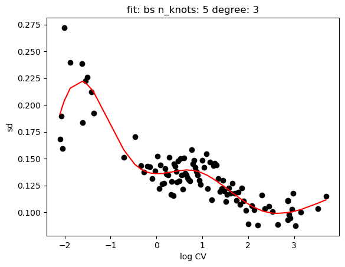

[84]:
import scanpy as sc
import singleCellHaystack as hs
Load data
[85]:
adata = sc.datasets.paul15()
adata
WARNING: In Scanpy 0.*, this returned logarithmized data. Now it returns non-logarithmized data.
/Users/diez/miniconda3/envs/singleCellHaystack/lib/python3.10/site-packages/anndata/compat/_overloaded_dict.py:106: ImplicitModificationWarning: Trying to modify attribute `._uns` of view, initializing view as actual.
self.data[key] = value
/Users/diez/miniconda3/envs/singleCellHaystack/lib/python3.10/contextlib.py:142: FutureWarning: X.dtype being converted to np.float32 from float64. In the next version of anndata (0.9) conversion will not be automatic. Pass dtype explicitly to avoid this warning. Pass `AnnData(X, dtype=X.dtype, ...)` to get the future behavour.
next(self.gen)
[85]:
AnnData object with n_obs × n_vars = 2730 × 3451
obs: 'paul15_clusters'
uns: 'iroot'
Preprocess
[86]:
sc.pp.normalize_total(adata)
sc.pp.log1p(adata)
sc.tl.pca(adata)
sc.pl.pca(adata)
/Users/diez/miniconda3/envs/singleCellHaystack/lib/python3.10/site-packages/scanpy/plotting/_tools/scatterplots.py:392: UserWarning: No data for colormapping provided via 'c'. Parameters 'cmap', 'norm' will be ignored
cax = scatter(

[87]:
sc.pp.neighbors(adata)
sc.tl.leiden(adata)
sc.tl.umap(adata)
sc.pl.umap(adata, color="leiden", legend_loc="on data")
/Users/diez/miniconda3/envs/singleCellHaystack/lib/python3.10/site-packages/scanpy/plotting/_tools/scatterplots.py:392: UserWarning: No data for colormapping provided via 'c'. Parameters 'cmap' will be ignored
cax = scatter(

Calculate DPT trajectories
[88]:
sc.tl.diffmap(adata)
sc.tl.dpt(adata)
sc.pl.umap(adata, color="dpt_pseudotime")

Run singleCellHaystack
For now there is not direct way to access the pseudotime information from AnnData object. But we can pass the expression matrix and 1D coordinates directly.
[89]:
import numpy
pseudotime = numpy.array(adata.obs.dpt_pseudotime.to_list())
pseudotime = pseudotime.reshape(-1, 1)
pseudotime
[89]:
array([[0.027526699 ],
[0.1844632626],
[0.2824547589],
...,
[0.024467092 ],
[0.1840169877],
[0.2610832453]])
[90]:
res = hs.haystack(adata.X, coord=pseudotime, features=adata.var_names)
> entering array method ...
> scaling coordinates ...
> calculating feature stds ...
> calculating grid points ...
> calculating distance to cells ...
> calculating densities ...
> calculating Q dist ...
> calculating KLD for 3451 features ...
100%|██████████| 3451/3451 [00:01<00:00, 1831.91it/s]
> calculating feature's CV ...
> selecting genes to randomize ...
> calculating randomized KLD ...
100%|██████████| 100/100 [00:04<00:00, 20.61it/s]
> calculating P values ...
> done.
[91]:
hs.plot_rand_fit(res, "mean")
hs.plot_rand_fit(res, "sd")


[92]:
hs.plot_pval_rank(res)
hs.plot_pval_hist(res)


[93]:
sum = res["results"]
sum
[93]:
| gene | KLD | pval | pval_adj | logpval | logpval_adj | |
|---|---|---|---|---|---|---|
| 2425 | Prtn3 | 0.177701 | 2.225502e-89 | 7.680208e-86 | -88.652572 | -85.114627 |
| 1121 | Fam132a | 0.351011 | 4.442031e-86 | 1.532945e-82 | -85.352418 | -81.814473 |
| 553 | Car2 | 0.156820 | 1.025334e-83 | 3.538429e-80 | -82.989134 | -79.451190 |
| 815 | Ctsg | 0.217872 | 4.388964e-83 | 1.514631e-79 | -82.357638 | -78.819693 |
| 1954 | Mt2 | 0.480812 | 1.839566e-80 | 6.348343e-77 | -79.735285 | -76.197340 |
| ... | ... | ... | ... | ... | ... | ... |
| 3409 | Zfp217 | 0.192728 | 9.547449e-01 | 1.000000e+00 | -0.020113 | 0.000000 |
| 1069 | Epx | 1.444927 | 9.588547e-01 | 1.000000e+00 | -0.018247 | 0.000000 |
| 2198 | Parp14 | 0.150764 | 9.706013e-01 | 1.000000e+00 | -0.012959 | 0.000000 |
| 154 | AK202301 | 0.026495 | 9.771774e-01 | 1.000000e+00 | -0.010027 | 0.000000 |
| 3308 | Vamp2 | 0.237500 | 9.950423e-01 | 1.000000e+00 | -0.002158 | 0.000000 |
3451 rows × 6 columns
[94]:
sc.pl.umap(adata, color=sum.gene.iloc[:9], ncols=3)

Export results
[95]:
#sum.to_csv("results-trajectory.csv")